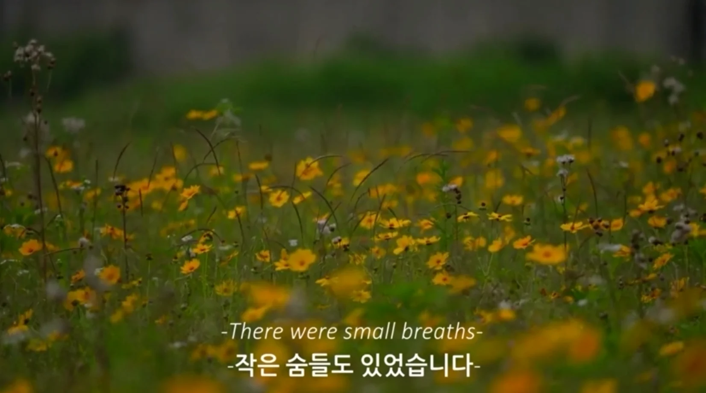

SOUND / VISUALIZATION
우리가 놓친 것들
일상에서 지나치기 쉬운 소리와 장면을 주제로, 건축의 개념을 영상과 시각적 이야기로 확장했습니다.
- YEAR / SEMESTER
- 2학년 1학기 · 2022
- PROJECT TYPE
- 시각화 · 영상 프로젝트
- CONTRIBUTION
- 개인 시각화 작업
- SITE / SUBJECT
- 일상의 소리와 풍경

THE IDEA
생각의 출발점
SOUND — ‘우리가 놓친 것들’을 주제로 일상의 작은 소리에 주목했습니다. 스토리 구성과 영상 편집, 발표의 과정을 포트폴리오에 기록했습니다.
- 01
감각의 관찰
익숙한 풍경에서 놓치고 있던 소리에 주목했습니다.
- 02
이야기 구성
장면과 흐름을 기획하며 개념을 전달하는 방식을 고민했습니다.
- 03
시각적 전달
영상 장면과 발표 패널로 작업을 정리했습니다. 이 페이지에는 PPT에 수록된 스틸 이미지를 소개합니다.
PROCESS & OUTCOME
과정과 결과
사진을 누르면 크게 볼 수 있습니다.